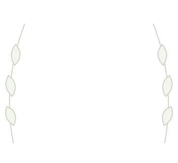
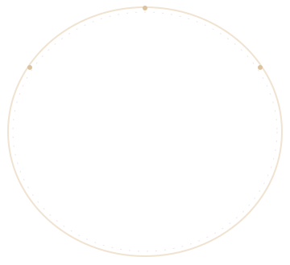

My Treeの装飾デザイン案
未承認のデザインです。この画面を開いても特典の取得や紹介の受付は始まりません。人を評価する点数や順位はありません。


取得した装飾は永久保有し、無料・Plus共通で選んで着脱できます。どれを特典として採用するかは運営確認後に決定します。
未承認のデザインです。この画面を開いても特典の取得や紹介の受付は始まりません。人を評価する点数や順位はありません。


取得した装飾は永久保有し、無料・Plus共通で選んで着脱できます。どれを特典として採用するかは運営確認後に決定します。